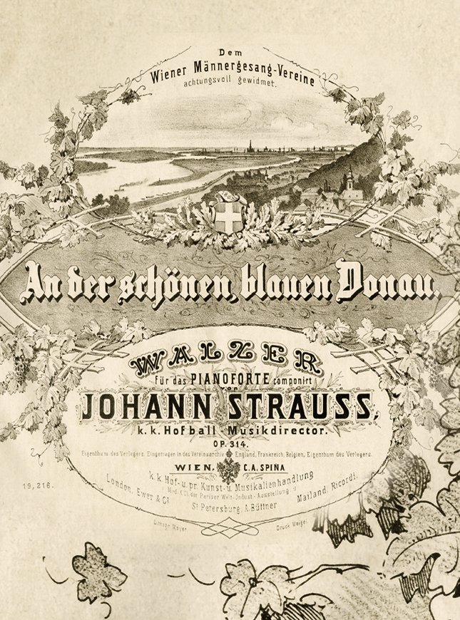

Every year at New Year the Vienna Philharmonic presents a program consisting of the lively and at the same time nostalgic music from the vast repertoire of the family of Johann Strauß and its contemporaries. This concert is now broadcast in over 90 countries worldwide.
 On The Beautiful Blue Danube by Johann Strauss
The international popularity of the New Year's Concert may create the impression that the orchestra's performance of the music of the Strauß dynasty extends back to Johann Strauß, Sr., and therefore to the beginning of the orchestra's history. In fact, however, for an extended period of time, the Philharmonic generally ignored the most "Viennese" music ever written. Probably the musicians did not wish to jeopardize the social advancement they had experienced upon the introduction of the Philharmonic concerts by associating themselves with "popular music". This attitude toward the Strauß dynasty changed only gradually. One determining factor for this reassessment was that the members of this unique family of composers enjoyed the highest respect among major composers such as Franz Liszt, Richard Wagner and Johannes Brahms. In addition, the Philharmonic musicians themselves had several direct encounters with Johann Strauß, Jr., which provided them the opportunity to observe the significance of this music and experience first-hand the charismatic personality of its creator, which had enraptured all of Europe.
The very first encounter between Johann Strauß, Jr., and the musicians of the Vienna Philharmonic was a premiere. Strauß had composed the waltz "Wiener Blut", op. 354, for the Vienna Opera Ball, which was held in the main hall of the Musikverein on April 22, 1873, and he personally conducted its first performance at this event as was his custom, with violin in hand. Their next encounter took place on November 4, 1873, when Strauß performed works by his father and Josef Lanner, as well as his own "Blue Danube" Waltz as part of a gala concert presented by the Chinese World Exposition committee. A "Soirée" in the Court Opera House then took place on December 11, 1877, with Strauß conducting the orchestra in the premiere of his "Reminiscences of Old and New Vienna", a potpourri based upon themes of his own works, as well as those of his father, for which the manuscript has since been lost. On October 14, 1894, the Philharmonic took part in a festival concert marking Strauß' 50th anniversary in the music business, and the master expressed his gratitude with the presentation of a commemorative medal and a telegram in which he stated: "In the meanwhile I send my warmest thanks to the great musicians of the famous Philharmonic for your masterful performance and also for the demonstration of your goodwill which brought me much pleasure - Johann Strauss". The final encounter had tragic consequences. On May 22, 1899, Strauß conducted the overture of "Die Fledermaus" for the first and only time in the Court Opera. At this time, he took a cold that developed into pneumonia, from which he died on June 3, 1899.
Even after the composer's death, the Philharmonic musicians did not immediately become great advocates of Strauß' music. In 1921, however, things began to change. For the occasion of the unveiling of the Johann Strauß memorial in Vienna's City Park, Arthur Nikisch (1855-1922) conducted the waltzes "Artist’s Life", "Blue Danube" and "Wine, Woman and Song", and the precedent set by this world-famous conductor seems to have had an effect. The final breakthrough took place at the celebrations of Strauß' 100th birthday on October 25, 1925. Felix von Weingartner conducted the "Blue Danube" Waltz on the Philharmonic subscription concert program of October 17/18th, and on October 25th, he conducted for the first time a Vienna Philharmonic concert consisting solely of Strauß' works.
Yet the conductor who truly founded the Strauß tradition of the Vienna Philharmonic and who remains perhaps to this day the foremost apologist of this music was Clemens Krauss (1893-1954). From 1929 to 1933 he conducted an annual concert of Strauß compositions at the Salzburg Festival, thus anticipating the format of the future New Year's Concerts.
The first New Year's Concert took place during the darkest chapter of the history of Austria and that of the Vienna Philharmonic. In the midst of barbarism, dictatorship and war, at a time of constant worry regarding the lives of members and their families, the Philharmonic sent an ambivalent signal: the net income from a concert dedicated to compositions by the Strauß dynasty which was performed on December 31, 1939, was donated entirely to the National Socialist fund-raising campaign "Kriegswinterhilfswerk". On January 1, 1941, a Philharmonic matinee entitled "Johann Strauss Concert" was performed. Taking place in the middle of the war, many regarded this as an expression of Viennese individuality, but it was also misappropriated for the National Socialistic propaganda of the "Großdeutscher Rundfunk". Clemens Krauss conducted these concerts until the end of the war. In the years 1946 and 1947, Josef Krips (1902-1974) replaced Krauss, who returned in 1948 after the end of his two-year conducting ban which had been imposed by the allies, and who conducted seven more New Year's Concerts until 1954.
Related Posts